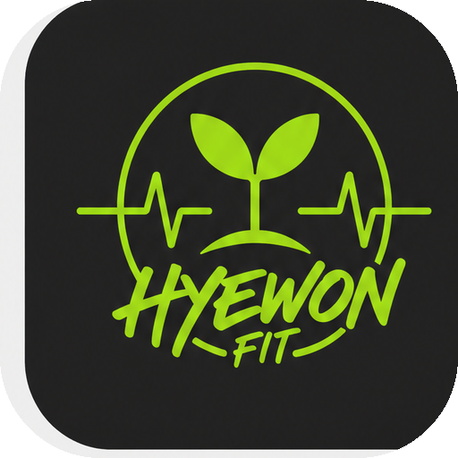

📲 홈 화면에 혜원핏 앱 설치하기

혜원핏
운동처방일지
계정은 담당 선생님이 배부합니다.
🎨 색을 골라보세요 · 설치 전에 고르면 홈 아이콘도 그 색
안녕하세요
1주차
마감 D-—
주 3일 목표0/3
유산소 필수0/2
달력
유산소
근력
연초록 칸=운동기간(숫자는 주차) · 초록 테두리=오늘
👤 — 으로 로그인 중
🏃
유산소 인증
삼성헬스·NRC·애플피트니스 스크린샷
💪
근력 인증
운동 사진 + 세트·횟수 입력
📷 운동 앱 스크린샷 업로드
탭하여 사진 선택
탭하여 사진 선택
오늘 운동 어땠나요?
오늘의 성찰 선택
0/300자
⏱ 타임마크 '사진 코드'로 찍은 사진만 됩니다
타임마크(Timemark) 앱 → 템플릿 → 사진 코드 를 고르고 운동하는 모습을 찍으세요.
사진에 날짜와 사진 코드가 보여야 하고, 날짜가 위에서 고른 요일과 같아야 인정됩니다.
한 번 낸 사진은 다시 못 씁니다.
📷 운동 사진 업로드
탭하여 사진 선택
탭하여 사진 선택
운동 내용 · 3가지 이상 필수
아래 3칸을 모두 채워야 저장할 수 있어요. 더 했으면 ＋로 추가하세요.
오늘 운동 어땠나요?
오늘의 성찰 선택
0/300자
💪 근력 · 근지구력
※ 기록지에 등급 기준이 없는 항목이라 기록만 남겨요.
🤸 유연성
※ 등급 기준이 없는 항목이라 기록만 남겨요. 등급은 1·2차 중 높은 기록으로 판정합니다.
⚖️ 신체조성
방학 전 → 4주차까지 측정요소별로 어떻게 변했는지 한눈에 볼 수 있어요.
회차별 기록
성찰일지
이번 주차이번 주 성찰
지난 성찰
내 기록 · 점수
최종 성취율
—%
자동 점수 —
주차별 달성
점수 구성
운동 달성률—
제출 정시성—